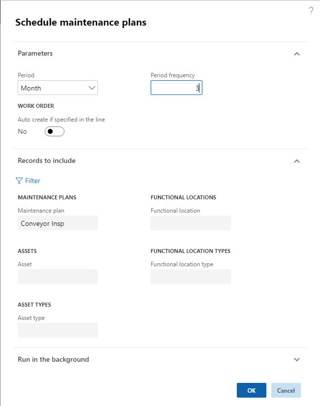
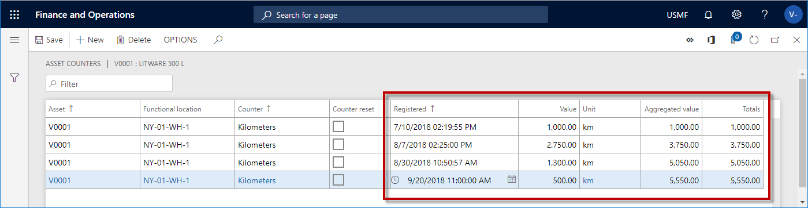

Wartungspläne terminieren
Important
Dynamics 365 for Finance and Operations hat sich zu speziell entwickelten Anwendungen entwickelt, mit denen Sie bestimmte Geschäftsfunktionen verwalten können. Weitere Informationen zu diesen Änderungen finden Sie im Dynamics 365-Lizenzierungshandbuch.
Die vorbeugende Wartungsplanung erzeugt Kalendereinträge auf Anlagen, basierend auf den auf den Anlagen eingerichteten Wartungsplänen. Sie können Kalendereinträge basierend auf ausgewählten Wartungsplänen, Anlagentypen und Anlagen planen.
Klicken Sie auf Anlagenmanagement > Periodisch > Präventive Wartung > Terminierte Wartungspläne.
Sie können ein Zeitintervall in den Feldern Periode und Periodenfrequenz auswählen.
Note
Die Felder Periode und Periodenfrequenz zeigen an, wie weit im Voraus Wartungseinteilungen auf der Grundlage der von Ihnen erstellten Wartungspläne (zeit- oder zählerbezogen) angelegt werden sollen. In der folgenden Abbildung werden Wartungseinteilungen (= Arbeitsauftragsvorschläge) ab dem Tagesdatum und drei Monaten erstellt.
- Wählen Sie „Ja“ auf der Seite Auto anlegen, wenn in der Zeile Umschalttaste angegeben, wenn Arbeitsaufträge automatisch gemäß der Wartungsplanzeile erstellt werden sollen.
Note
Wenn diese Umschalttaste auf „Ja“ gesetzt ist, ist das Kontrollkästchen und Automatisch anlegen auch in Wartungsplanzeilen in Wartungspläne aktiviert, Arbeitsaufträge werden auf der Grundlage der Wartungsplaneinteilungen angelegt und Wartungseinteilungen mit dem Status „Arbeitsauftrag angelegt“ werden ebenfalls angelegt. Wenn nur eine Option ausgewählt ist (Auto anlegen, wenn in diesem Dialog in der Zeile Umschaltfläche angegeben oder Automatisch anlegen im Formular Wartungspläne), werden nur Wartungseinteilungen mit dem Status „angelegt“ angelegt. In diesem Fall werden keine Arbeitsaufträge erstellt.
- Es ist möglich, Kalendereinträge auf der Grundlage von Wartungsplänen (Uhrzeit oder Zähler), Anlagen, Anlagentypen, Anlagentypen, Technischen Standorte und Technischen Standortarten zu erzeugen. Klicken Sie auf die Schaltfläche Filter und treffen Sie bei Bedarf Ihre Auswahl.
- Bezüglich der Terminierung von Wartungsplänen auf Technischen Standorten: Wenn Sie die Einrichtung von Anlagenarten, Herstellern und Modellen zu Wartungsplänen in Alle Technischen Standorte > Wartungspläne FastTab aktualisieren, nachdem Sie Wartungspläne terminiert haben, werden bestehende Wartungsplaneinträge zu diesem Technischen Standort automatisch gelöscht. Um neue Kalendereinträge anzulegen, die dem aktualisierten Wartungsplan auf dem Technischen Standort entsprechen, müssen Sie einen neuen Wartungsplanplan für diesen Technischen Standort erstellen. Weitere Informationen zur Einrichtung von Anlagentypen, Herstellern und Modellen auf Technischen Standorte finden Sie unter Technische Standorte anlegen.
Beispiel: Sie möchten einen Wartungsplan für einen bestimmten Technischen Standort anlegen, d.h. alle Anlagen, die auf diesem Technischen Standort zu einem bestimmten Zeitpunkt angelegt wurden, werden bei der Terminierung des Wartungsplans berücksichtigt. In diesem Fall legen Sie einen Wartungsplan an und wählen den jeweiligen Technischen Standort aus, fügen aber keine Anlagen in den Wartungsplan ein. Das Ergebnis ist, dass bei der Terminierung dieses Wartungsplans Wartungseinteilungen für alle Anlagen angelegt werden, die zu diesem Zeitpunkt mit dem Technischen Standort zusammenhängen.
- Wenn Sie Änderungen an Anlagentypen, Herstellern und Modellen in Anlagentypen vornehmen, betreffen diese Änderungen nur neue Anlagen, die die aktualisierte Anlagenart verwenden. Lesen Sie mehr über die Einrichtung von Anlagen-Typen unter Anlagen-Typen.
- Klicken Sie auf OK, um die Generierung von Wartungsplaneinträgen für Anlagen zu starten. Die erzeugten Einträge werden auf der Listenseite Alle Wartungspläne angezeigt. Die folgende Abbildung zeigt ein Beispiel für das Dialogfeld Wartungspläne terminieren.

- Im Dialog Wartungspläne terminieren können Sie Batch-Jobs auf der Seite Ausführen im Hintergrund FastTab einrichten, um in regelmäßigen Abständen automatisch Kalendereinträge zu erzeugen.
- Wenn Sie vorbeugende Wartung planen, werden keine Wartungseinteilungen mit einem erwarteten Startdatum und einer erwarteten Uhrzeit vor dem Systemdatum und der Systemzeit angelegt.
Die folgende Abbildung veranschaulicht eine zeitabhängige Wartungsplankalkulation.

Bezüglich zählerabhängiger Wartungspläne: In den folgenden Abbildungen sind zwei verschiedene Zählerregistrierungszyklen dargestellt. Sie basieren auf einem Wartungsplan für die Anlage „V0001“, der eine monatliche Laufleistung der Anlage (eines Fahrzeugs) von ca. 2.000 km erwartet.
Im ersten Beispiel werden die erwarteten 2.000 km nicht jeden Monat erreicht. Gemäß dem zählergesteuerten Wartungsplan beträgt der Schwellenwert 2.000 km, d.h. wenn Sie eine Wartungsplanterminierung durchführen, sollte bei jedem Erreichen des Schwellenwerts von 2.000 Kilometern eine Wartungseinteilung angelegt werden. In Beispiel 1 gibt es 4 Registrierungszeilen, aber die 2.000 Kilometer lange Schwelle wird nur einmal erreicht. Dies bedeutet, dass bei der Ausführung von Wartungsplänen für diese Anlage, z.B. für einen Zeitraum von 3 Monaten, nur eine Wartungseinteilung angelegt wird.
In der nächsten Abbildung werden jeden Monat 2.000 km oder mehr registriert. Daher würden drei Wartungszeilen entstehen, wenn Sie Wartungspläne für diese Anlage für einen Zeitraum von 3 Monaten terminieren.
Die hier beschriebenen Beispiele zeigen, dass alle Zählerregistrierungen an einer Anlage einen Trend aufweisen, der die Abnutzung des Anlagenwertes beschreibt. Dieser Trend wird zum Zeitpunkt der Wartungsplanterminierung als Berechnungsgrundlage verwendet.
